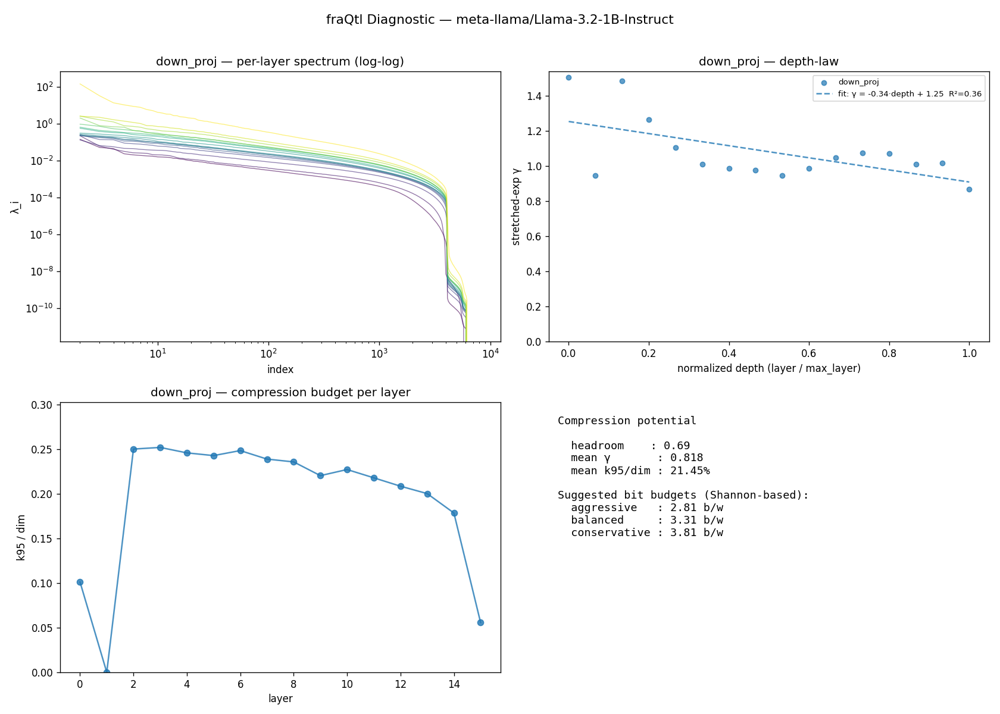

fraQtl Diagnostic — meta-llama/Llama-3.2-1B-Instruct
v0.1.0 ·
16 layers ·
projections: down_proj, o_proj ·
276.8s on cuda
moderate compression tolerated: suggested 3.3 b/w balanced, 2.8 b/w aggressive. mean k95/dim = 21.45%, mean γ = 0.818
Compression potential (Shannon-based)
| Metric | Value |
|---|
| Headroom score (0–1) | 0.693 |
| Mean γ (stretched-exp shape) | 0.818 |
| Mean k95 / dim | 21.45% |
| Suggested b/w (aggressive) | 2.81 |
| Suggested b/w (balanced) | 3.31 |
| Suggested b/w (conservative) | 3.81 |
Depth-law fits
| Projection | Slope | Intercept | R² | γ p10/p50/p90 | n |
|---|
| down_proj | -0.345 | 1.254 | 0.356 | 0.945 / 1.015 / 1.375 | 16 |
| o_proj | -0.237 | 0.673 | 0.430 | 0.465 / 0.547 / 0.685 | 16 |
Per-layer fingerprint (first 40)
| Layer | Proj | dim | γ | α_tail | k95 |
k99 | knee | best fit |
|---|
| 0 | down_proj | 8192 | 1.506 | 325.78 | 829 | 1692 | 2313 | stretched_exp |
| 0 | o_proj | 2048 | 0.812 | 7.83 | 372 | 712 | 1047 | stretched_exp |
| 1 | down_proj | 8192 | 0.945 | 4.90 | 1 | 1 | — | stretched_exp |
| 1 | o_proj | 2048 | 0.735 | 5.91 | 664 | 1156 | 1380 | stretched_exp |
| 2 | down_proj | 8192 | 1.486 | 42.09 | 2051 | 3004 | 3127 | stretched_exp |
| 2 | o_proj | 2048 | 0.572 | 4.34 | 668 | 1229 | 1583 | stretched_exp |
| 3 | down_proj | 8192 | 1.265 | 49.46 | 2066 | 3062 | 3270 | stretched_exp |
| 3 | o_proj | 2048 | 0.565 | 4.54 | 657 | 1209 | 1564 | stretched_exp |
| 4 | down_proj | 8192 | 1.104 | 31.03 | 2016 | 3061 | 3331 | stretched_exp |
| 4 | o_proj | 2048 | 0.636 | 5.82 | 524 | 1032 | 1384 | stretched_exp |
| 5 | down_proj | 8192 | 1.010 | 81.65 | 1991 | 3072 | 3396 | exp |
| 5 | o_proj | 2048 | 0.533 | 4.92 | 455 | 988 | 1472 | stretched_exp |
| 6 | down_proj | 8192 | 0.987 | 46.66 | 2037 | 3116 | 3434 | exp |
| 6 | o_proj | 2048 | 0.467 | 4.25 | 475 | 1039 | 1563 | stretched_exp |
| 7 | down_proj | 8192 | 0.975 | 23.15 | 1959 | 3068 | 3456 | stretched_exp |
| 7 | o_proj | 2048 | 0.518 | 5.04 | 365 | 865 | 1474 | stretched_exp |
| 8 | down_proj | 8192 | 0.946 | 63.95 | 1933 | 3041 | 3439 | stretched_exp |
| 8 | o_proj | 2048 | 0.463 | 4.30 | 401 | 933 | 1542 | stretched_exp |
| 9 | down_proj | 8192 | 0.988 | 59.71 | 1807 | 2930 | 3375 | exp |
| 9 | o_proj | 2048 | 0.509 | 4.62 | 495 | 1038 | 1562 | stretched_exp |
| 10 | down_proj | 8192 | 1.049 | 49.27 | 1863 | 2962 | 3397 | stretched_exp |
| 10 | o_proj | 2048 | 0.528 | 4.73 | 507 | 1053 | 1501 | stretched_exp |
| 11 | down_proj | 8192 | 1.074 | 38.43 | 1787 | 2901 | 3341 | stretched_exp |
| 11 | o_proj | 2048 | 0.575 | 5.19 | 537 | 1053 | 1473 | stretched_exp |
| 12 | down_proj | 8192 | 1.070 | 345.61 | 1710 | 2842 | 3329 | stretched_exp |
| 12 | o_proj | 2048 | 0.555 | 5.12 | 417 | 925 | 1435 | stretched_exp |
| 13 | down_proj | 8192 | 1.011 | 439.09 | 1642 | 2796 | 3369 | exp |
| 13 | o_proj | 2048 | 0.581 | 5.35 | 444 | 969 | 1444 | stretched_exp |
| 14 | down_proj | 8192 | 1.018 | 103.10 | 1464 | 2650 | 3322 | exp |
| 14 | o_proj | 2048 | 0.539 | 5.29 | 390 | 896 | 1375 | stretched_exp |
| 15 | down_proj | 8192 | 0.869 | 119.32 | 458 | 1545 | 3175 | stretched_exp |
| 15 | o_proj | 2048 | 0.292 | 4.97 | 284 | 722 | 1476 | stretched_exp |
Figures
(generate the PNG with report.to_png(path) — shown here if embedded)

About
This diagnostic measures information-theoretic compressibility from the input covariance
spectrum of each layer. It does not perform compression — it reports the ceiling and
shape. The fraQtl compression engine uses this fingerprint
plus additional engineering (sign correction, per-model calibration) to get closer to the
ceiling in practice.